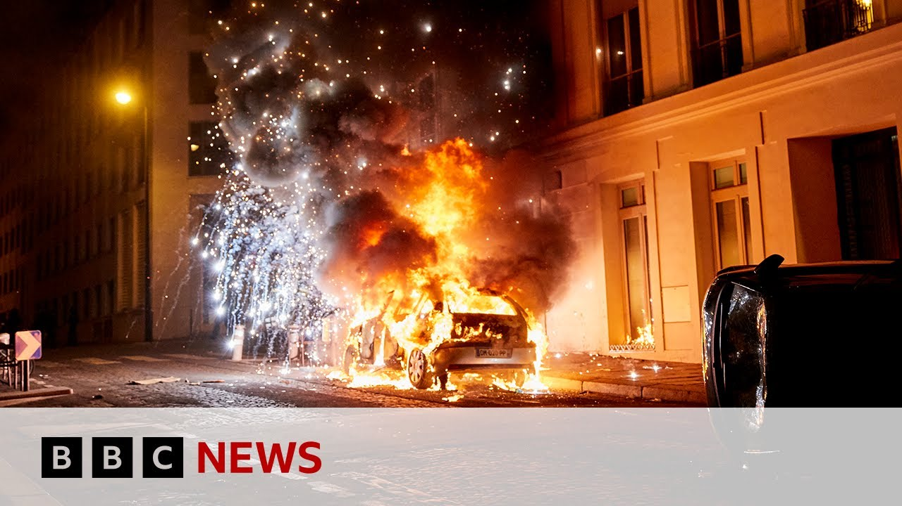

【法国巴黎圣日耳曼队欧冠夺冠后两人死亡数百人被捕 | BBC新闻】
Summary: Two people died and 559 were arrested during Paris celebrations after PSG's Champions League victory.
摘要： 巴黎圣日耳曼队欧冠夺冠后，庆祝活动中两人死亡，559人被捕。

⏱️ Estimated Reading Time: 5 min
Two people have died and 559 have been arrested during Champions League final celebrations in Paris.
巴黎欧冠决赛庆祝活动中，两人死亡，559人被捕。
This comes after Paris Sanjgeran won their first ever European Champions League football final, soundly beating Inter Milan 5-nil in Munich.
此前，巴黎圣日耳曼队在慕尼黑以5比0大胜国际米兰，首次赢得欧洲冠军联赛冠军。
With more on this, I'm joined by my colleague Nikki Schiller in the newsroom.
关于此事，我与新闻室的同事尼基·席勒连线了解更多。
Nikki, bring us up to date on what the French authorities are saying.
尼基，请为我们更新法国当局的说法。
IO ministry Samantha have confirmed that two people have died and 192 others have been injured during those celebrations as you say after Paris Sanjaman won that uh Champions League trophy final in against Inter Milan in uh Munich.
内政部萨曼莎证实，正如你所说，在巴黎圣日耳曼队在慕尼黑战胜国际米兰赢得欧冠奖杯后，庆祝活动中两人死亡，192人受伤。
Now, the two people who died, the authorities are telling us it is a 17-year-old boy who was stabbed in the chest in the town of Dax uh during some of those celebrations.
当局告诉我们，其中一名死者是17岁男孩，在达克斯镇的庆祝活动中被刺中胸部。
The other person to die, a 23-year-old man who was driving a scooter dur through central Paris and was hit by a car.
另一名死者是23岁男子，他在巴黎市中心驾驶摩托车时被汽车撞倒。
Now, the prosecutor's office say the driver was detained, but that they tested negative for drugs and also alcohol.
检察官办公室表示，司机已被拘留，但毒品和酒精检测呈阴性。
Now, we know that there were a number of clashes in the center of Paris and indeed 559 people have been detained.
我们知道，巴黎市中心发生了多起冲突，确实有559人被拘留。
Flares were set off, fireworks as well, and uh 22 police officers were injured.
有人燃放信号弹和烟花，22名警察受伤。
Now, one of those police officers is in an induced coma.
其中一名警察处于诱导昏迷状态。
Now, local media are reporting that he was hit in the eye by one of those fireworks.
当地媒体报道称，他的眼睛被烟花击中。
We've also seen a number of cars burnt out in Paris and the interior ministry giving us figures saying that there were 692 fires of which there were 264 in vehicles.
我们还看到巴黎多辆汽车被烧毁，内政部数据显示共发生692起火灾，其中264起涉及车辆。
So, it gives you a sense of the scale of the number of fires that were lit during those demonstrations after that win.
这让你感受到胜利后示威活动中火灾的规模。
We also know that a number of shops were attacked.
我们还知道多家商店遭到袭击。
Indeed, 30 people detained around a foot locker store in central Paris.
确实，巴黎市中心一家Foot Locker商店附近有30人被拘留。
Now, the authorities have been responding.
当局已作出回应。
The mayor of Daxware that young teenage boy was stabbed to death, said his thoughts are with the young victim, his family, and friends.
达克斯市长表示，他对被刺死的年轻受害者及其家人和朋友表示哀悼。
He went on to say, "We are flawed by all the drama tonight. it is advisable to quickly shed light on these facts in order to severely punish the perpetrator.
他接着说：“今晚的悲剧让我们深感悲痛，应尽快查明事实，严惩肇事者。”
So, um the authorities, as I said, detaining a number of people, 559 arrested during the uh incidents in Paris.
正如我所说，当局拘留了多人，巴黎事件中有559人被捕。
We've seen water cannon being used and riot police on the streets.
我们看到街上使用了水炮和防暴警察。
We know that there were around 5,400 officers who were deployed in case there was any trouble last night.
我们知道昨晚部署了约5400名警察以防骚乱。
When it comes to the team Samantha, they are back in Paris this afternoon and we are expecting a victory parade through the center of Paris down the Shond and of course I would imagine that there'll be a lot of police out on the streets there to police that event when tens of thousands of PSG fans are expected.
至于球队萨曼莎，他们今天下午返回巴黎，预计将在香榭丽舍大街举行胜利游行，当然，预计将有数万名巴黎圣日耳曼球迷参加，届时街上会有大量警察维持秩序。
We're also um expecting President Mcron to welcome the victorious team back in Paris a little later today as well.
我们还预计马克龙总统今天晚些时候将在巴黎迎接胜利归来的球队。
Okay, Nikki, thank you.
好的，尼基，谢谢。
Well, we are also expecting an update from the French authorities about those incidents last night and the death of two people and the arrests of many hundreds.
我们还在等待法国当局就昨晚的事件、两人死亡和数百人被捕提供最新消息。
So, we'll bring you that news conference live as soon as it comes into
因此，我们将尽快为您直播这场新闻发布会。